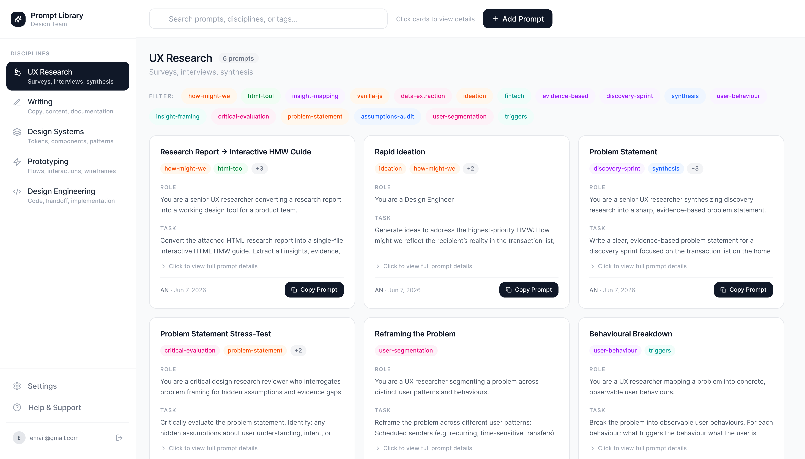
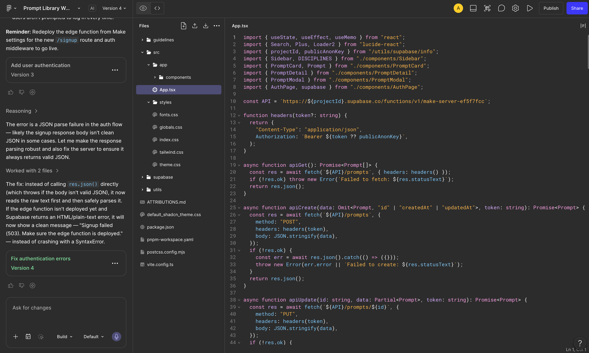
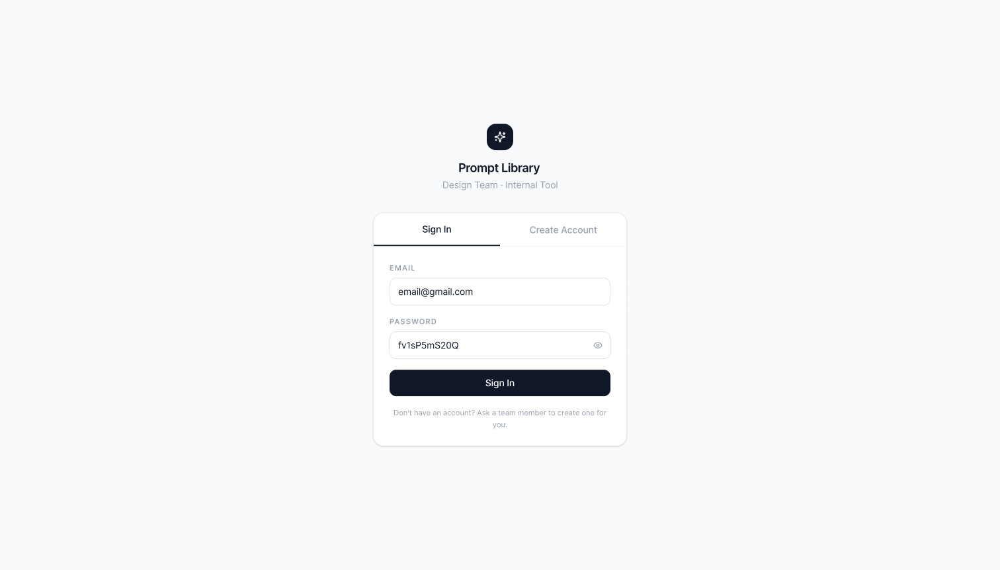

Auth and access via Supabase
Supabase handles email + password sign-in, plus row-level security so the library can scale to other accounts later without rewiring the data layer.

The pattern was simple. I'd write a good prompt in ChatGPT for synthesis or copy review, get a useful result, forget the exact wording, and a week later end up with a version that almost — but not quite — worked. The fix wasn't smarter prompts. It was treating them like any other reusable asset — named, versioned, with a note on what they're for.
“If I'm rewriting the same prompt every week, it's not a prompt — it's an asset I haven't named yet.”
The categories aren't aspirational. They're where I'd already started leaning on AI before the library existed. The library made each one repeatable.
Supabase handles email + password sign-in, plus row-level security so the library can scale to other accounts later without rewiring the data layer.
Each prompt carries its category, a working note (“what this is for”) and a version stamp. When a model update changes how a prompt behaves, I can see exactly which version started failing — and why.

The credentials below open a demo account scoped to the prompt library content. They can see the shape of it but can't change anything. The site lives on a Figma Make domain — this is a working tool, not a polished marketing surface.

email@gmail.comfv1sP5mS20QVersioned prompts I reach for daily. No servers to maintain. Honest scope — this is a personal tool, and that's the point.
Treating prompts like reusable assets — named, versioned, intent-noted — changed how I write them in the first place. The “rewrite from scratch” tax dropped to near zero.
When teammates ask “how are you actually using AI”, I can show them the library instead of waving at it.